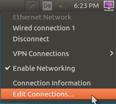
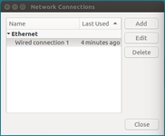
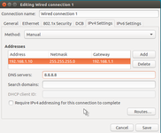
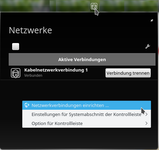
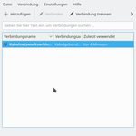
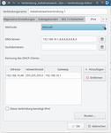

IP-Adresse wechseln
Artikel für fortgeschrittene Anwender
Dieser Artikel erfordert mehr Erfahrung im Umgang mit Linux und ist daher nur für fortgeschrittene Benutzer gedacht.
Dieser Artikel wurde für die folgenden Ubuntu-Versionen getestet:
Dieser Artikel ist größtenteils für alle Ubuntu-Versionen gültig.
Zum Verständnis dieses Artikels sind folgende Seiten hilfreich:
Wicd, optional
Ein Terminal öffnen, optional
Einen Editor öffnen, optional
Root-Rechte, optional
Die Basis eines jeden Computernetzwerkes ist die IP-Adresse. Rechner kommunizieren miteinander, indem sie Datenpakete an eine bestimmte IP versenden und auf ihrer eigenen IP Daten empfangen. In einem LAN benutzt man meist IP-Adressen aus dem Bereich der Privaten Netze.
Einer Netzwerkkarte wird immer eine IP-Adresse zugewiesen. Dies kann man manuell machen oder über einen DHCP-Server, was den Vorteil birgt, dass Computer einfach an das Netzwerk angeschlossen werden können, ohne dass man auf diesen das Netzwerk erst einrichten muss. Üblicherweise enthalten DSL-Router solch einen DHCP-Server, so dass DHCP der einfachste Weg in das Netzwerk sein sollte.
Hauptgrund für das Konfigurieren einer festen IP-Adresse im Heimbereich ist die Erreichbarkeit von Server-Diensten oder das einfache Verwalten von mehreren Rechnern.
Hinweis:
Bei dem Einsatz eines DHCP-Dienstes sollte das Setzen einer festen IP-Adresse auf Seite des Clients nur dann erfolgen, wenn Adresskonflikte mit den übrigen Netzwerkteilnehmern ausgeschlossen werden können.
Grafische Konfiguration¶
NetworkManager¶
Mit Rechtsklick auf das Symbol des Netzwerk-Managers und Auswahl von "Netzwerkverbindungen einrichten..." kommt man auf die Übersicht der verfügbaren Netzwerkschnittstellen. Dort wählt man die zu ändernde mit Doppelklick aus, so dass sich das Fenster mit den Eigenschaften öffnet. In diesem kann man im Reiter IPv4 / IPv6 die Einstellung "manuell" wählen und die gewünschten Werte auswählen.
|  |
| NetworkManager-Menü unter Ubuntu |
|  |
| NetworkManager-Verbindungseditor unter Ubuntu |
|  |
| NetworkManager-Verbindungseditor IPv4 unter Ubuntu |
|  |
| NetworkManager-Menü unter Kubuntu |
|  |
| NetworkManager-Verbindungseditor unter Kubuntu |
|  |
| NetworkManager-Verbindungseditor IPv4 unter Kubuntu |
Terminal¶
IP-Adresse ermitteln¶
Mit dem Befehl
ip address show
im Terminal [3] kann man sich seine aktuelle Netzwerkkonfiguration ausgeben lassen. Die IP-Adresse findet man dabei in den mit inet beginnenden Zeilen.
Beispielausgabe:
1: lo: <LOOPBACK,UP,LOWER_UP> mtu 65536 qdisc noqueue state UNKNOWN group default qlen 1
(Ausgabe gekürzt)
2: eno1: <BROADCAST,MULTICAST,UP,LOWER_UP> mtu 1500 qdisc pfifo_fast state UP group default qlen 1000
link/ether 54:04:a6:c5:3c:42 brd ff:ff:ff:ff:ff:ff
inet 192.168.16.48/24 brd 192.168.16.255 scope global eno1
valid_lft forever preferred_lft forever
inet6 fd7c:4f6d:2ada:1684:5604:a6ff:fec5:3c42/64 scope global mngtmpaddr dynamic
valid_lft 1814378sec preferred_lft 604778sec
inet6 2003:80:8f77:6cb8:5604:a6ff:fec5:3c42/64 scope global mngtmpaddr dynamic
valid_lft 14378sec preferred_lft 1778sec
inet6 fe80::5604:a6ff:fec5:3c42/64 scope link
valid_lft forever preferred_lft foreverAus diesen Daten kann man folgendes relevante ablesen:
lo: Ist die Loopback-Schnittstelle. Diese sollte nicht geändert werden, da sonst die interne Kommunikation nicht mehr läuft.
eno1: Bezeichnung der Netzwerkschnittstelle
Diese hat die feste IP-Adresse 192.168.16.48 im IPv4-Adressbereich
mit der Netzmaske 255.255.255.0 (das ist die Bedeutung von /24, siehe Classless Inter-Domain Routing)
und der Broadcast-Adresse 192.168.16.255.
Die IPv6-Adressen werden dynamisch vergeben.
Schnittstellenname / biosdevname¶
Seit der Umstellung auf biosdevname (Bios-Geräte-Namen) sind die alten Bezeichnungen wie eth0, usw. verschwunden. Informationen dazu können dabei direkt von DELL geladen werden, die diese Benennung entwickelt und unter der GPL veröffentlicht haben. PDF-Datei:Consistent Network Device Naming in Linux 
 .
.
IP-Adresse ändern¶
NetworkManager¶
Mittels
ls -lha /etc/NetworkManager/system-connections/
findet man die bereits eingerichteten Verbindungen des NetworkManagers. Diese werden mit einem Editor und root-Rechten[5] bearbeitet oder wahlweise zu einer neuen Verbindung kopiert.
IPv4¶
Im Abschnitt [IPv4] können dort die Eintragungen vorgenommen werden. Das Beispiel zeigt die feste IP 192.168.1.10.
[ipv4] method=manual address1=192.168.1.10/24,192.168.1.1 dns=192.168.1.1;8.8.8.8;8.8.8.4; dns-search=
Der Aufbau von "address" ist dabei "gewünschte IP/Netzmaske,Gateway". Dies gilt auch für IPv6-Adressen.
NetworkManager/Dispatcher¶
Um die IP-Adresse per Script anzupassen, eignen sich die NetworkManager/Dispatcher-Scripte. Dort kann man auf den Wechsel der Netzwerkverbindung reagieren und eigene Scripte ausführen.
Änderungen an der Konfiguration müssen durch einen Neustart des NM
systemctl restart network-manager.service
Oder ohne systemd mit
sudo service networking restart
übernommen werden.
interfaces¶
An dieser Stelle sei auf die ausführliche Beschreibung unter interfaces hingewiesen.
Beispielkonfiguration:
iface eno1 inet static
address 192.168.1.10
netmask 255.255.255.0
network 192.168.1.0
broadcast 192.168.1.255
gateway 192.168.1.1
iface eno1 inet6 auto
systemd-networkd¶
Durch die Einführung von systemd gibt es eine weitere Möglichkeit das Netzwerk zu konfigurieren. Ab Ubuntu 15.04 ist es bei Ubuntu und den offiziellen Derivaten der Standard Init-Dienst.
Konfigurationen können unter /etc/systemd/network/NAME.network abgelegt werden, die äquivalente Beispielkonfiguration für die statische IP unter systemd.
[Match] Name=eno1 [Network] Address=192.168.1.10/24 Gateway=192.168.1.1
Es ist erlaubt mehrere IP-Adressen pro Gerät zu verwenden. Eine ausführliche Beschreibung wie man Networking unter systemd verwendet findet sich unter
man systemd.network
Links¶
extern¶
http://linux.dell.com/biosdevname/ DELL Projektseite für biosdevname
CIDR - Wikipedia-Artikel über IP-Adressen und Netzmasken
- Erstellt mit Inyoka
-
 2004 – 2017 ubuntuusers.de • Einige Rechte vorbehalten
2004 – 2017 ubuntuusers.de • Einige Rechte vorbehalten
Lizenz • Kontakt • Datenschutz • Impressum • Serverstatus -
Serverhousing gespendet von